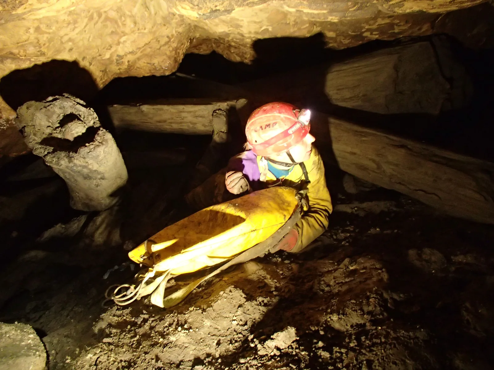

"Usrani" izlet u Đulu-Medvedicu
U narodnim predanjima vjeruje se da ako te ptica posere, pratit će te sreća. Vrijedi li slično u špilji, još nije evidentirano kroz ikakva predanja. Sve do sad.

Nedjelja, 22. 10., osam ujutro, kao urica zove me „Prokletnik“, Marijan Sutlović na mob: „Hej, ja sam sad krenuo od doma, kupim te za 15 minuta ispred zgrade.“ Krcamo se, pravac Ogulin autoputom. U vožnji saznajem da se plan malčice izmijenio: Dalibor Paar (SOV) je s Vedranom Vučićem (SDĐM) već nacrtao nove metre dan ranije, tako da sam upao u „napredniju“ ekipu, kako se prezentiralo na najavi izleta. „Bit će nam super“, komentirao je Sutla i oboje smo jedva čekali zaći u špilju – ja malo nervozniji.
Već kroz sat vremena od polaska dolazimo u Ogulin, pronalazimo birtiju Jazzbinu gdje su nas čekali Vedran Vučić i Barbara Bertović (SDĐM, SKOL). Uz kavu i krafne, Vedran nam prezentira plan: bit ćemo lučonoše i modeli na dvjema lokacijama Medvedice: prva su Poljakov slap i Paukova mreža, a druga Gandalfov čvor. Cilj je bio uslikati lokalitete te vrtložne puževe u Impresionističkom kanalu kraj Gandalfovog čvora. Također, željeli su se proučiti daljnji kanali u toj okolici i pogledati postoji li možda još koji spoj s Đulom. Sutla i ja u šali smišljamo i vlastiti zadatak: potragu za Sutlinim ručkom, kojeg je ostavio u klozetnim dijelovima birtije. Da smo samo znali…
Outerwear – model, underwear – Intimissimi
Sjeli smo u auto i uputili se za Vedranom i Barbarom prema ulazu u špilju, koji je, na naše sveopće iznenađenje, bio odmah u dvorištu zgrade: betonirano parkiralište, zidić i početak vrtače pune smeća. Sutlović mi je dao svoju opremu, te smo, uzevši svatko po jednu transportnu, krenuli u Medvedicu. Ulaz prepun smeća i balvana, vertikala od kojih par metara koji je Sutla prešao držeći se sa zidove, skliska kosina i bili smo u špilji.
Uputili smo se prema Crnome gazu, gdje nas je ko pravi, dobri domaćin Vedran iznenadio s ribarskim hlačama te rezervnim gojzama i čizmama. Nadalje, Barbaru je prenio na svojim junačkim plećima, budući da nije bilo dovoljno ribarskih hlača. Uslijedio je prvi foto sešn, a odmah zatim i drugi kod Poljakovog slapa i Paukove mreže. Slikala se priroda, pejzaži, balvani i đubre, u koje je često bila slana Barbara (reume radi).
You shall not pass!
Odradivši lakši dio, uputili smo se prema ulazu gdje smo ostavili višak transportni i krenuli prema Gandalfovom čvoru. Pritom smo stali na Šanku i malo škicnuli u kartu kompliciranog labirinta kanala, a iz istog razloga smo imali polusatno čekanje u Rivendellu, dok je Vedran pokušao pronaći put provlačeći se po raznim kanalima. Pravi put je označio kraj mojeg, budući da je posrijedi bio dosta kompliciran i sklizak penj, visok kojih 7 metara, koji nije bio osiguran, te sam, nakon što sam se i sam uvjerio u skliskoću, odlučio ostati i ne riskirati ozbiljniji pad. Ekipa mi je ostavila dodatni flis i jaknu te su krenuli dalje s namjerom da kroz pola sata budu natrag.
Do sad nisam bio u situaciji da duže vrijeme provedem na mjestu u speleološkom objektu, te sam uz dva flisa, jaknu i korduru, budući da sam sav bio preliven znojem, nakon pola sata, 45 minuta čekanja, počeo osjećati simptome blage pothlađenosti. Vrag je uzeo šalu kada mi se počelo spavati, stoga sam uzeo astro foliju te se uz pomoć nje ponovno zagrijao.
Nakon otprilike sat i pol od našeg rastanka vratio se Sutlović, dok su Barbara i Vedran zaostali slikajući te istražujući kanale. Do Gandalfovog čvora se nije stiglo budući da se gubilo u labirintima Medvedice.
Što su jeli naši stari
Vedran i Barbara su se vratili pola sata kasnije te su imali malih poteškoća spustiti se niz penj. Tih par minuta je na kraju imalo ključnu ulogu. Naime, za neupućene, u sustav Đulin ponor – Medvedicu svakom kišom prodiru otpadne vode iz loše napravljenih septičkih jama, a loša sreća se taman poklopila s Vedranovim i Barbarinim silaskom niz penj. U špilji se odjednom začuju slapovi i šum vode, a Vedrana i Barbaru stane sa svih strana zalijevati dvotjedna akumulacija ogulinskih septičkih jama. Krajnji rezulat je bio Vedran umazan od glave do pete, ne toliko umazana Barbara, a Sutlović je prošao samo sa par „šrapnela“.
Zasrani, i pothlađeni, nabacili smo „špuru“ prema izlazu, cijelo vrijeme jureći kroz kanale u kojima je sa svih strana odzvanjao šum nadirajuće vode. Popeli smo se van, presvukli u dvorištu te raskrstili svoje pute: Barbara i Vedran su bježali pod tuš, a Sutla i ja na zasluženu pivu u Jazzbinu.
[gallery ids="1491,1492,1493,1494,1495,1496,1497,1498" type="rectangular"]